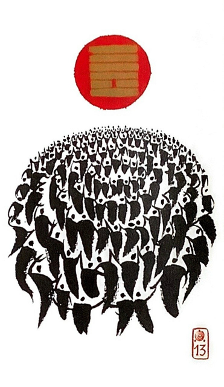

천화동인 (한가지 동..사람 인)
대길 2
서로 다른 것들이 모여 하나를 이룬다
공명정대한 마음으로 대동천하의 시대를 개척한 상태한가지 목표를 향해 다 함께 마음을 모아한 곳에 모여 있는 상황을 표현한 그림
뜻이 같은 사람들과 화합. 협력.협동일치.동료애.우정.교제.친절.친목.상호존중.목표공유. 공동목표.의존.합의.공감대를 굳히다
연애운
주변에 사람이 끊이지 않음.인기 많음.편한 동료.친구
사업운
길하다,순조롭다. 일복 많고 고객이 늘어남.서비스업.영업직에 좋음
속마음
썸편한 친구처럼 생각하는 마음
1년 이상편하고 솔직하게 대하려는 마음. 친밀감
이별 후긍정적으로 화해하고 재회하고 싶은 마음
솔로연애운
사람 많은 곳에서 생길 확률
건강운
스트레스. 체력저하. 전염병 조심